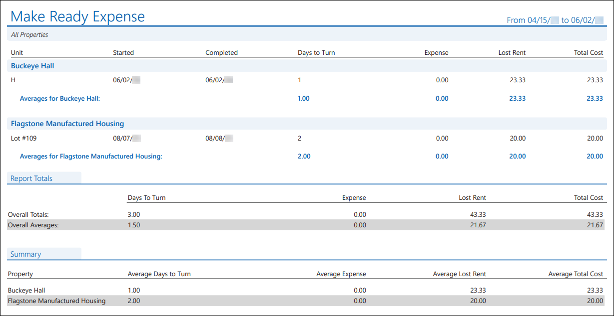
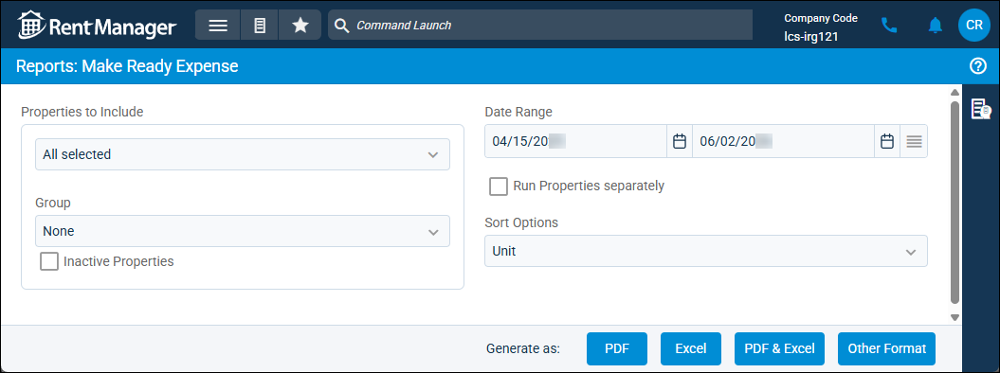
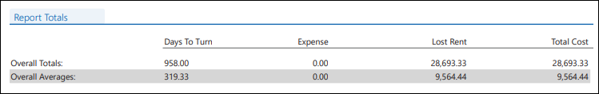
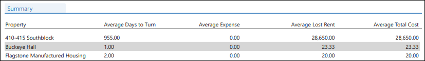

Source: https://rmxhelp.rentmanager.com/Topics/Express/Other/Reports/Make-Ready-Expense.htm
Make Ready Expense (Report)
The Make Ready Expense report displays the costs of a unit turnover process, both in material costs and lost rent. The report examines make-ready processes that were closed during the specified date range.
Related Privileges
| Group | Privilege | Column |
|---|---|---|
| Letter/Email Templates/Reports/Packets | Run reports | Enabled |
Additionally, on the Reports tab, you must have access to Make Ready Expense.
For more information, refer to Control User Access.
To view the Make Ready Expense report, do the following:
-
Go to
 arrow_forward Services arrow_forward Make Ready arrow_forward Make Ready Expense.
arrow_forward Services arrow_forward Make Ready arrow_forward Make Ready Expense.
The Reports: Make Ready Expense page displays. -
Adjust the report options as desired. Each option is described below.
-
Generate the report in your desired file format(s).
Related Preferences
Reports may look different depending on whether or not the Use modernized report style system preference is enabled. For more information, refer to General Report Options (System Preferences).

Report Options
The report options described below determine what data displays in the report.

Properties to Include
Select each property or a property Group to be included in the report.
More Information
This field populates only with the properties to which you have access. Your access to properties can be managed from your user account or on the property's details page. For more information, refer to Limit Access to a Property.
Optionally, check Show Inactive Properties to include properties that are no longer active.
Date Range
Enter or select the date range to determine the data that displays in the report.
In the Date Range section, set the From and To dates for which the report should examine data.
These fields automatically populate with today’s date. Enter a different date or select a date from the calendar. Alternatively, adjust the dates using the available preset buttons or click  to open more options for setting a date range.
to open more options for setting a date range.
Run Properties Separately
Check to generate a separate report for each selected property. Otherwise, all selected properties are combined into a single report.
Sort Options
Select one of the following options to determine how the report results are organized within each property subheading:
| Option | Description |
|---|---|
|
Completed Date |
Units are sorted chronologically by the date on which the Make Ready process was completed in ascending order (oldest to newest). |
|
Start Date |
Units are sorted chronologically by the Start Date as shown on the Make Ready Details page in ascending order (oldest to newest). |
|
Unit |
Units are sorted alphanumerically by Unit name. |
|
Unit Type |
If the optional column for Unit Type has been added to the report results via Rent Manager 12, units are sorted alphanumerically by Unit Type. If the Unit Type column has not been added, it does not display on the report and units are instead sorted alphanumerically by Unit name. |
Report Results
The report results are described below including, if applicable, section, column, and subreport or tab descriptions.
Report Header
The report header displays the report name and key information selected in the report options, such as date information and which properties were examined in the report.
Column Descriptions
This report is organized by property. Information about each property is organized into columns. The columns that display in the report are described below.
| Column | Description |
|---|---|
|
Completed |
The date that the last item in the make ready process was completed. |
|
Days to Turn |
The number of days it took to complete the make ready process, from the Start Date to the Completed Date. The average displays at the bottom of the column for each property. The column total is divided by the number of make ready processes at the property. |
|
Expense |
Calculates the total of itemized expenses from the Work Order sections of all service issues that are listed in the make ready process. The average displays at the bottom of the column for each property. The column total is divided by the number of make ready processes at the property. |
|
Lost Rent |
The amount of rent that would have been collected if the unit was occupied. First, Rent Manager divides the amount entered on the unit's Market Rent tab by thirty, using a standard thirty-day month to determine the amount of rent lost per day. Then, the amount of rent lost per day is multiplied by the number of days in the make ready process. Lost Rent = Amount of Rent Per Day x Days Lost to Make Ready The average displays at the bottom of the column for each property. The column total is divided by the number of make ready processes at the property. |
|
Started |
The Start Date as selected on the Make Ready Details page. |
|
Total Cost |
The total amount of the make ready process, using the following formula: Total Cost = Expense + Lost Rent The average displays at the bottom of the column for each property. The column total is divided by the number of make ready processes at the property. |
|
Unit |
The Name of the unit where the make ready process occurred. |
Report Totals Subreport
The Report Totals subreport displays the totals of the Days to Turn, Expense, Lost Rent, and Total Cost columns for all properties.

| Row | Description |
|---|---|
|
Overall Totals |
The total amount of the make ready process for all properties, using the following formula: Overall Total = Expense + Lost Rent |
|
Overall Averages |
The average amount of a make ready process per unit, for all properties, using the following formula: Overall Average = Total Cost for all properties / Number of make ready processes for all properties |
Summary Subreport
The Summary subreport displays if the report option of Run Properties Separately is unchecked and provides a breakdown of all make ready processes in the report.

The following columns display in the subreport:
| Column | Description |
|---|---|
|
Average Days to Turn |
The number of days, on average, that a make ready process at the property takes, using the following formula: Average Days to Turn = Total number of days in make ready for all units / Number of make ready processes at the property |
|
Average Expense |
The average cost of a make ready process, using the following formula: Average Expense = Total cost listed on all service issues that are part of a make ready process / Number of make ready processes at the property |
|
Average Lost Rent |
The average amount of rental income lost during a make ready process, using the following formula: Average Lost Rent = Lost rent for all units at the property / Number of make ready processes at the property |
|
Average Total Cost |
The average combined amount of the expense and lost rent per make ready process, using the following formula: Average Total Cost = (Expense for all make ready processes at the property + Lost Rent for all make ready processes at the property) / Number of make ready processes at the property |
|
Property |
The name of the property at which a make ready process was completed. |